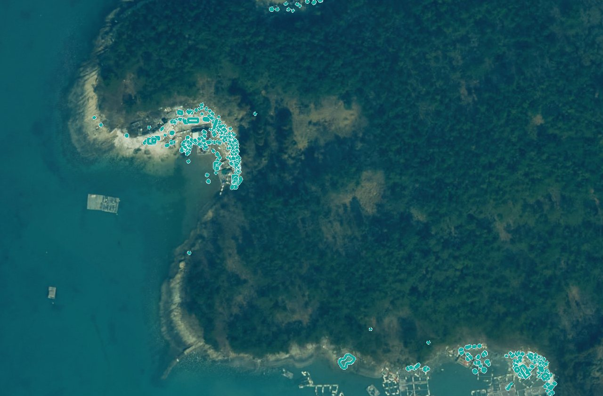

운영2025년 사업 · 해운항만과LX 담당 미지정
해양쓰레기 실태조사 서비스
해안 항공·드론 영상에서 쓰레기 군집을 찾아 수거할 곳부터 알려 줍니다
1,857쓰레기 군집 곳 · 여수시
최근 결과 2026.06.08다음 2027년 확대 적용
이 서비스 열기보고서
光全AI
전남광주 AI 플랫폼 기관 관리자정보화담당관 이수진 XI맵 ? 나가기
운영해안 항공·드론 영상에서 쓰레기 군집을 찾아 수거할 곳부터 알려 줍니다
탐지 결과에 해류·바람을 더해 해안별로 쌓일 양을 미리 봅니다
입력해양쓰레기 실태조사 · 2026.06.08 결과1차 결과가 갱신되면 다시 계산합니다